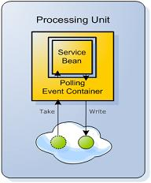
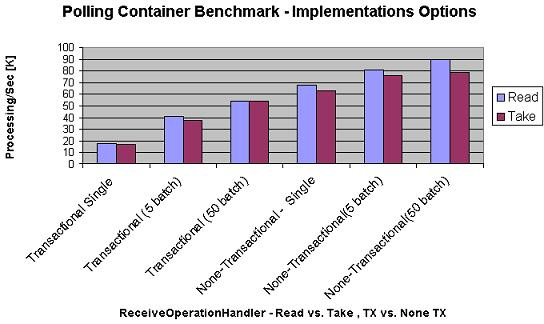

Section Summary: Allows you to perform polling receive operations against the space.
Overview
The polling event container is an implementation of the polling consumer pattern which uses the space to receive events. It performs polling receive operations against the space. If a receive operation succeeds (a value is returned from the receive operation), the Data Event Listener is invoked with the event. A polling event operation is mainly used when simulating Queue semantics or when using the master-worker design pattern.

Here is a simple example of polling event container configuration:
Annotation
<!-- Enable scan for OpenSpaces and Spring components --> <context:component-scan base-package="com.mycompany"/> <!-- Enable support for @Polling annotation --> <os-events:annotation-support /> <os-core:space id="space" url="/./space" /> <os-core:giga-space id="gigaSpace" space="space"/>
@EventDriven @Polling public class SimpleListener { @EventTemplate Data unprocessedData() { Data template = new Data(); template.setProcessed(false); return template; } @SpaceDataEvent public Data eventListener(Data event) { //process Data here } }
Namespace
<os-core:space id="space" url="/./space" /> <os-core:giga-space id="gigaSpace" space="space"/> <bean id="simpleListener" class="SimpleListener" /> <os-events:polling-container id="eventContainer" giga-space="gigaSpace"> <os-core:template> <bean class="org.openspaces.example.data.common.Data"> <property name="processed" value="false"/> </bean> </os-core:template> <os-events:listener> <os-events:annotation-adapter> <os-events:delegate ref="simpleListener"/> </os-events:annotation-adapter> </os-events:listener> </os-events:polling-container>
Plain XML
<bean id="space" class="org.openspaces.core.space.UrlSpaceFactoryBean"> <property name="url" value="/./space" /> </bean> <bean id="gigaSpace" class="org.openspaces.core.GigaSpaceFactoryBean"> <property name="space" ref="space" /> </bean> <bean id="simpleListener" class="SimpleListener" /> <bean id="eventContainer" class="org.openspaces.events.polling.SimplePollingEventListenerContainer"> <property name="gigaSpace" ref="gigaSpace" /> <property name="template"> <bean class="org.openspaces.example.data.common.Data"> <property name="processed" value="false"/> </bean> </property> <property name="eventListener"> <bean class="org.openspaces.events.adapter.AnnotationEventListenerAdapter"> <property name="delegate" ref="simpleListener" /> </bean> </property> </bean>
Code
GigaSpace gigaSpace = // either create the GigaSpace or get it by injection SimplePollingEventListenerContainer pollingEventListenerContainer = new SimplePollingContainerConfigurer(gigaSpace) .template(new Data(false)) .eventListenerAnnotation(new Object() { @SpaceDataEvent public void eventHappened() { eventCalled.set(true); } }).pollingContainer(); // when needed dispose of the notification container pollingEventListenerContainer.destroy();
The example above performs single take operations (see below) using the provided template (a Data object with its processed flag set to false). If the take operation succeeds (a value is returned), the SimpleListener is invoked. The operations are performed on the configured GigaSpace bean (in this case, if working in a clustered topology, it is performed directly on the cluster member).
Primary/Backup
The polling event container, by default, performs receive operations only when the relevant space it is working against is in primary mode. When the space is in backup mode, no receive operations are performed. If the space moves from backup mode to primary mode, the receive operations are started.
 This mostly applies when working with an embedded space directly with a cluster member. When working with a clustered space (performing operations against the whole cluster), the mode of the space is always primary.
This mostly applies when working with an embedded space directly with a cluster member. When working with a clustered space (performing operations against the whole cluster), the mode of the space is always primary.
Concurrent Consumers
By default, the polling event container starts a single thread that performs the receive operations and invokes the event listener. It can be configured to start several concurrent consumer threads and have an upper limit to the concurrent consumer threads. This provides faster processing of events, however, any FIFO behavior that might be configured in the space and/or template is lost.
 You may start multiple polling containers consuming data in FIFO manner , each running a single consumer thread (consuming potentially a batch of space objects at a time) where each using a different template to scale the data consumption and processing activity.
You may start multiple polling containers consuming data in FIFO manner , each running a single consumer thread (consuming potentially a batch of space objects at a time) where each using a different template to scale the data consumption and processing activity.
Here is an example of a polling container with 3 concurrent consumers and 5 maximum concurrent consumers:
Annotation
@EventDriven @Polling(concurrentConsumers = 3, maxConcurrentConsumers = 5) public class SimpleListener { @EventTemplate Data unprocessedData() { Data template = new Data(); template.setProcessed(false); return template; } @SpaceDataEvent public Data eventListener(Data event) { //process Data here } }
Namespace
<os-events:polling-container id="eventContainer" giga-space="gigaSpace" concurrent-consumers="3" max-concurrent-consumers="5"> <!-- ... --> </os-events:polling-container>
Plain XML
<bean id="eventContainer" class="org.openspaces.events.polling.SimplePollingEventListenerContainer"> <property name="concurrentConsumers" value="3" /> <property name="maxConcurrentConsumers" value="5" /> <!-- ... --> </bean>
Sometimes, it is very convenient to have a listener instance per concurrent polling thread. This allows a thread-safe instance variable to be constructed without worrying about concurrent access. In such a case, the prototype Spring scope can be used in conjunction with a listenerRef bean name injection. Here is an example:
Namespace
<bean id="listener" class="eg.SimpleListener" scope="prototype" /> <os-events:annotation-adapter id="adapterListener" scope="prototype"> <os-events:delegate ref="listener"/> </os-events:annotation-adapter> <os-events:polling-container id="eventContainer" giga-space="gigaSpace" concurrent-consumers="2"> <!-- ... --> <os-events:listener ref="adapterListener" /> </os-events:polling-container>
Plain XML
<bean id="listener" class="eg.SimpleListener" scope="prototype" /> <bean id="adapterListener" class="org.openspaces.events.adapter.AnnotationEventListenerAdapter" scope="prototype"> <property name="delegate" ref="listener" /> </bean> <bean id="eventContainer" class="org.openspaces.events.polling.SimplePollingEventListenerContainer"> <property name="concurrentConsumers" value="2" /> <property name="eventListenerRef" value="adapterListener" /> <!-- ... --> </bean>
Template Definition
When performing receive operations, a template is defined, creating a virtualized subset of data within the space that matches it. GigaSpaces supports templates based on the actual domain model (with null values denoting wildcards), which are shown in the examples. GigaSpaces allows the use of SQLQuery in order to query the space, which can be easily used with the event container as the template. Here is an example of how it can be defined:
Annotation
@EventDriven @Polling public class SimpleListener { @EventTemplate SQLQuery<Data> unprocessedData() { SQLQuery<Data> template = new SQLQuery<Data>(Data.class, "processed = true"); return template; } @SpaceDataEvent public Data eventListener(Data event) { //process Data here } }
Namespace
<os-events:polling-container id="eventContainer" giga-space="gigaSpace"> <os-core:sql-query where="processed = true" class="org.openspaces.example.data.common.Data"/> <os-events:listener> <os-events:annotation-adapter> <os-events:delegate ref="simpleListener"/> </os-events:annotation-adapter> </os-events:listener> </os-events:polling-container>
Plain XML
<bean id="eventContainer" class="org.openspaces.events.polling.SimplePollingEventListenerContainer"> <property name="gigaSpace" ref="gigaSpace" /> <property name="template"> <bean class="com.j_spaces.core.client.SQLQuery"> <constructor index="0" value="org.openspaces.example.data.common.Data" /> <constructor index="0" value="processed = true" /> </bean> </property> <property name="eventListener"> <bean class="org.openspaces.events.adapter.AnnotationEventListenerAdapter"> <property name="delegate" ref="simpleListener" /> </bean> </property> </bean>
| A polling container or notify container could have only one template. If you need multiple event handlers you will need to create another polling container or notify container. If you use multiple polling containers make sure the different templates does not overlap each other. |
Receive Operation Handler
The polling receive container performs receive operations. The actual implementation of the receive operation is abstracted using the following interface:
public interface ReceiveOperationHandler { /** * Performs the actual receive operation. Return values allowed are single object or an array of * objects. * * @param template * The template to use for the receive operation. * @param gigaSpace * The GigaSpace interface to perform the receive operations with * @param receiveTimeout * Receive timeout value * @return The receive result. <code>null</code> indicating no receive occured. Single object * or an array of objects indicating the receive operation result. * @throws DataAccessException */ Object receive(Object template, GigaSpace gigaSpace, long receiveTimeout) throws DataAccessException; }
OpenSpaces comes with several built-in receive operation-handler implementations:
| Receive Operation Handler | Description |
|---|---|
| SingleTakeReceiveOperationHandler | Performs a single blocking take operation with the receive timeout. |
| SingleReadReceiveOperationHandler | Performs a single blocking read operation with the receive timeout. |
| ExclusiveReadReceiveOperationHandler | Performs a single read operation under an exclusive read lock (similar to "select for update" in databases) with the receive timeout. Exclusive read lock mimics the take operation without actually taking the Entry from the space. |
| MultiTakeReceiveOperationHandler | First tries to perform takeMultiple (using a configured max Entries). If no values are returned, performs a blocking take operation with the receive timeout. |
| MultiReadReceiveOperationHandler | First tries to perform readMultiple (using a configured max Entries). If no values are returned, performs a blocking read operation with the receive timeout. |
| MultiExclusiveReadReceiveOperationHandler | First tries to perform readMultiple (using a configured max Entries). If no values are returned, performs a blocking read operation with the receive timeout. Both read operations are performed under an exclusive read lock (similar to "select for update" in databases) which mimics a take operation without actually taking the Entry from the space. Note, this receive operation handler must be used within a transaction. |
 When using the ExclusiveReadReceiveOperationHandler or even the SingleReadReceiveOperationHandler, it is important to remember that the actual event still remains in the space. If the data event is not taken from the space, or one of its properties changes in order not to match the container template, the same data event is read again.
When using the ExclusiveReadReceiveOperationHandler or even the SingleReadReceiveOperationHandler, it is important to remember that the actual event still remains in the space. If the data event is not taken from the space, or one of its properties changes in order not to match the container template, the same data event is read again.
Here is an example of how the receive operation handler can be configured with MultiTakeReceiveOperationHandler:
Annotation
@EventDriven @Polling public class SimpleListener { @ReceiveHandler ReceiveOperationHandler receiveHandler() { MultiTakeReceiveOperationHandler receiveHandler = new MultiTakeReceiveOperationHandler(); receiveHandler.setMaxEntries(100); return receiveHandler; } @EventTemplate Data unprocessedData() { Data template = new Data(); template.setProcessed(false); return template; } @SpaceDataEvent public Data eventListener(Data event) { //process Data here } }
Namespace
<os-core:space id="space" url="/./space" /> <os-core:giga-space id="gigaSpace" space="space"/> <bean id="simpleListener" class="SimpleListener" /> <os-events:polling-container id="eventContainer" giga-space="gigaSpace"> <os-events:receive-operation-handler> <bean class="org.openspaces.events.polling.receive.MultiTakeReceiveOperationHandler" /> </os-events:receive-operation-handler> <os-core:template> <bean class="org.openspaces.example.data.common.Data"> <property name="processed" value="false"/> </bean> </os-core:template> <os-events:listener> <os-events:annotation-adapter> <os-events:delegate ref="simpleListener"/> </os-events:annotation-adapter> </os-events:listener> </os-events:polling-container>
Plain XML
<bean id="space" class="org.openspaces.core.space.UrlSpaceFactoryBean"> <property name="url" value="/./space" /> </bean> <bean id="gigaSpace" class="org.openspaces.core.GigaSpaceFactoryBean"> <property name="space" ref="space" /> </bean> <bean id="simpleListener" class="SimpleListener" /> <bean id="eventContainer" class="org.openspaces.events.polling.SimplePollingEventListenerContainer"> <property name="gigaSpace" ref="gigaSpace" /> <property name="receiveOperationHandler"> <bean class="org.openspaces.events.polling.receive.MultiTakeReceiveOperationHandler" /> </property> <property name="template"> <bean class="org.openspaces.example.data.common.Data"> <property name="processed" value="false"/> </bean> </property> <property name="eventListener"> <bean class="org.openspaces.events.adapter.AnnotationEventListenerAdapter"> <property name="delegate" ref="simpleListener" /> </bean> </property> </bean>
Non-Blocking Receive Handler
When working with a partitioned cluster and configuring the polling container to work against the whole cluster, blocking operations are not allowed (when the routing index is not set in the template). The default receive operation handlers support performing the receive operation in a non-blocking manner, by sleeping between non-blocking operations. For example, the SingleTakeReceiveOperationHandler performs a non-blocking take operation against the space and then sleeps for a configurable amount of time. Here is an example of how it can be configured:
Annotation
@EventDriven @Polling public class SimpleListener { @ReceiveHandler ReceiveOperationHandler receiveHandler() { SingleTakeReceiveOperationHandler receiveHandler = new SingleTakeReceiveOperationHandler(); receiveHandler.setNonBlocking(true); receiveHandler.setNonBlockingFactor(10); return receiveHandler; } @EventTemplate Data unprocessedData() { Data template = new Data(); template.setProcessed(false); return template; } @SpaceDataEvent public Data eventListener(Data event) { //process Data here } }
Namespace
<os-core:space id="space" url="/./space" /> <os-core:giga-space id="gigaSpace" space="space"/> <bean id="simpleListener" class="SimpleListener" /> <os-events:polling-container id="eventContainer" giga-space="gigaSpace" receive-timeout="10000"> <os-events:receive-operation-handler> <bean class="org.openspaces.events.polling.receive.SingleTakeReceiveOperationHandler"> <property name="nonBlocking" value="true" /> <property name="nonBlockingFactor" value="10" /> </bean> </os-events:receive-operation-handler> <os-core:template> <bean class="org.openspaces.example.data.common.Data"> <property name="processed" value="false"/> </bean> </os-core:template> <os-events:listener> <os-events:annotation-adapter> <os-events:delegate ref="simpleListener"/> </os-events:annotation-adapter> </os-events:listener> </os-events:polling-container>
Plain XML
<bean id="space" class="org.openspaces.core.space.UrlSpaceFactoryBean"> <property name="url" value="/./space" /> </bean> <bean id="gigaSpace" class="org.openspaces.core.GigaSpaceFactoryBean"> <property name="space" ref="space" /> </bean> <bean id="simpleListener" class="SimpleListener" /> <bean id="eventContainer" class="org.openspaces.events.polling.SimplePollingEventListenerContainer"> <property name="gigaSpace" ref="gigaSpace" /> <property name="receiveTimeout" value="10000" /> <property name="receiveOperationHandler"> <bean class="org.openspaces.events.polling.receive.SingleTakeReceiveOperationHandler"> <property name="nonBlocking" value="true" /> <property name="nonBlockingFactor" value="10" /> </bean> </property> <property name="template"> <bean class="org.openspaces.example.data.common.Data"> <property name="processed" value="false"/> </bean> </property> <property name="eventListener"> <bean class="org.openspaces.events.adapter.AnnotationEventListenerAdapter"> <property name="delegate" ref="simpleListener" /> </bean> </property> </bean>
The above example uses a receive timeout of 10 seconds (10000 milliseconds). The SingleTakeReceiveOperationHandler is configured to be non-blocking with a non-blocking factor of 10. This means that the receive handler performs 10 non-blocking takes within 10 seconds and sleeps the rest of the time (~1 second each time).
Batch Operations and passArrayAsIs
Processing data in batches may improve the processing throughput performance. Instead of consuming object one at a time from the space and processing it, you may consume a batch with multiple objects and process these in one transaction. This may improve the overall throughput rate, but may impact the latency of the individual object processing time.
See below a simple benchmark results comparing the different options:

See full benchmark description on the How to Implement my Processor? - The Polling Container Benchmark GigaSpaces blog site.
You may use batching via the MultiTakeReceiveOperationHandler. The MultiTakeReceiveOperationHandler.setMaxEntries(integer) allows you to set the maximum amount of objects to be consumed with each polling event. If the space does not have sufficient number of matching objects during the polling point in time, the event listener method will be called with the existing number of matching objects (will be smaller than the MaxEntries value. There will be no delay in such a case and the polling container will not wait until there will be exact amount of matching objects to consume as specified via the MaxEntries.
Certain receive operation handlers might return an array as a result of the receive operation. A prime example is the MultiTakeReceiveOperationHandler, which might return an array as a result of a takeMultiple operation called by the polling container. By default, the polling container serializes the execution of the array into invocation of the event listener method for each element in the array. If you want the event to operate on the whole array (receive the array as a parameter into the event listener method), the passArrayAsIs annotation should be set to true.
Here is an example for batch processing using the passArrayAsIs - with this example the polling container will consume a batch of objects using takeMultiple, modify these and write these back into the space in one operation using writeMultiple:
@EventDriven @Polling(passArrayAsIs = true) public class SimpleBatchListener { @ReceiveHandler ReceiveOperationHandler receiveHandler() { MultiTakeReceiveOperationHandler receiveHandler = new MultiTakeReceiveOperationHandler(); receiveHandler.setMaxEntries(100); return receiveHandler; } @EventTemplate Data unprocessedData() { Data template = new Data(); template.setProcessed(false); return template; } @SpaceDataEvent public Data[] eventListener(Data events[]) { //process Data within a loop for (int i = 0; i < events.length; i++) { events[i].setProcessed(true); } return events; } }
Transaction Support
Both the receive operation and the actual event action can be configured to be performed under a transaction. Transaction support is required when, for example, an exception occurs in the event listener, and the receive operation needs to be to rolled back (and the actual data event is returned to the space). Adding transaction support is very simple in the polling container, and can be done by injecting a transaction manager into it. For example:
Annotation
<!-- Enable scan for OpenSpaces and Spring components --> <context:component-scan base-package="com.mycompany"/> <!-- Enable support for @Polling annotation --> <os-events:annotation-support /> <os-core:space id="space" url="/./space" /> <os-core:local-tx-manager id="transactionManager" space="space"/> <os-core:giga-space id="gigaSpace" space="space" tx-manager="transactionManager"/>
@EventDriven @Polling @TransactionalEvent public class SimpleListener { @EventTemplate Data unprocessedData() { Data template = new Data(); template.setProcessed(false); return template; } @SpaceDataEvent public Data eventListener(Data event) { //process Data here } }
Namespace
<os-core:space id="space" url="/./space" /> <os-core:local-tx-manager id="transactionManager" space="space"/> <os-core:giga-space id="gigaSpace" space="space" tx-manager="transactionManager"/> <bean id="simpleListener" class="SimpleListener" /> <os-events:polling-container id="eventContainer" giga-space="gigaSpace"> <os-events:tx-support tx-manager="transactionManager"/> <os-core:template> <bean class="org.openspaces.example.data.common.Data"> <property name="processed" value="false"/> </bean> </os-core:template> <os-events:listener> <os-events:annotation-adapter> <os-events:delegate ref="simpleListener"/> </os-events:annotation-adapter> </os-events:listener> </os-events:polling-container>
Plain XML
<bean id="space" class="org.openspaces.core.space.UrlSpaceFactoryBean"> <property name="url" value="/./space" /> </bean> <bean id="transactionManager" class="org.openspaces.core.transaction.manager.LocalJiniTransactionManager"> <property name="space" ref="space" /> </bean> <bean id="gigaSpace" class="org.openspaces.core.GigaSpaceFactoryBean"> <property name="space" ref="space" /> <property name="transactionManager" ref="transactionManager" /> </bean> <bean id="simpleListener" class="SimpleListener" /> <bean id="eventContainer" class="org.openspaces.events.polling.SimplePollingEventListenerContainer"> <property name="transactionManager" ref="transactionManager" /> <property name="gigaSpace" ref="gigaSpace" /> <property name="template"> <bean class="org.openspaces.example.data.common.Data"> <property name="processed" value="false"/> </bean> </property> <property name="eventListener"> <bean class="org.openspaces.events.adapter.AnnotationEventListenerAdapter"> <property name="delegate" ref="simpleListener" /> </bean> </property> </bean>
Code
GigaSpace gigaSpace = ...//create a GigaSpace instance //creating a local transaction manager. For more details please refer to the [Transaction Management] section PlatformTransactionManager ptm = new LocalJiniTxManagerConfigurer(gigaSpace.getSpace()).transactionManager(); //creating a listener SimpleListener listener = new SimpleListener(); //creating a polling container which will automatically start receiving event from the space SimplePollingEventListenerContainer pollingContainer configurer = new SimplePollingContainerConfigurer(gigaSpace) .template(listener.getTemplate()).eventListenerAnnotation(listener) .transactionManager(ptm) .receiveTimeout(1000) .pollingContainer();
When using transactions with polling container a special care should be taken with timeout values. Transactions started by the polling container can have a timeout value associated with them (if not set will default to the default timeout value of the transaction manager, which is 60 Sec). If setting a specific timeout value, make sure the timeout value is higher than the timeout value for blocking operations and includes the expected execution time of the associated listener.
 Note the timeout value is in seconds as per Spring spec for TransactionDefinition.
Note the timeout value is in seconds as per Spring spec for TransactionDefinition.
Here is an example how timeout value (and transaction isolation) can be set with polling container:
Annotation
<!-- Enable scan for OpenSpaces and Spring components --> <context:component-scan base-package="com.mycompany"/> <!-- Enable support for @Polling annotation --> <os-events:annotation-support /> <os-core:space id="space" url="/./space" /> <os-core:local-tx-manager id="transactionManager" space="space"/> <os-core:giga-space id="gigaSpace" space="space" tx-manager="transactionManager"/>
@EventDriven @Polling @TransactionalEvent(isolation = Isolation.READ_COMMITTED, timeout = 1000) public class SimpleListener { @EventTemplate Data unprocessedData() { Data template = new Data(); template.setProcessed(false); return template; } @SpaceDataEvent public Data eventListener(Data event) { //process Data here } }
Namespace
<os-core:space id="space" url="/./space" /> <os-core:giga-space id="gigaSpace" space="space"/> <os-core:local-tx-manager id="transactionManager" giga-space="gigaSpace"/> <bean id="simpleListener" class="SimpleListener" /> <os-events:polling-container id="eventContainer" giga-space="gigaSpace"> <os-events:tx-support tx-manager="transactionManager" tx-timeout="1000" tx-isolation="READ_COMMITTED" /> <os-core:template> <bean class="org.openspaces.example.data.common.Data"> <property name="processed" value="false"/> </bean> </os-core:template> <os-events:listener> <os-events:annotation-adapter> <os-events:delegate ref="simpleListener"/> </os-events:annotation-adapter> </os-events:listener> </os-events:polling-container>
Plain XML
<bean id="space" class="org.openspaces.core.space.UrlSpaceFactoryBean"> <property name="url" value="/./space" /> </bean> <bean id="gigaSpace" class="org.openspaces.core.GigaSpaceFactoryBean"> <property name="space" ref="space" /> </bean> <bean id="transactionManager" class="org.openspaces.core.transaction.manager.LocalJiniTransactionManager"> <property name="gigaSpace" ref="gigaSpace" /> </bean> <bean id="simpleListener" class="SimpleListener" /> <bean id="eventContainer" class="org.openspaces.events.polling.SimplePollingEventListenerContainer"> <property name="gigaSpace" ref="gigaSpace" /> <property name="transactionManager" ref="transactionManager" /> <property name="transactionTimeout" value="1000" /> <property name="transactionIsolationLevelName" value="READ_COMMITTED" /> <property name="template"> <bean class="org.openspaces.example.data.common.Data"> <property name="processed" value="false"/> </bean> </property> <property name="eventListener"> <bean class="org.openspaces.events.adapter.AnnotationEventListenerAdapter"> <property name="delegate" ref="simpleListener" /> </bean> </property> </bean>
Trigger Receive Operation
When configuring the polling event container to perform its receive operation and event actions under a transaction, a transaction is started and rolled back for each unsuccessful receive operation, which results in a higher load on the space. The polling event container allows pluggable logic to be used in order to decide if the actual receive operation should be performed or not. This logic, called the trigger receive operation, is performed outside the receive transaction boundaries. The following interface is provided for custom implementation of this logic:
public interface TriggerOperationHandler { /** * Allows to perform a trigger receive operation which control if the active receive operation * will be performed in a polling event container. This feature is mainly used when having * polling event operations with transactions where the trigger receive operation is performed * outside of a transaction thus reducing the creation of transactions did not perform the * actual receive operation. * * <p> * If this operation returns a non <code>null</code> value, it means that the receive * operation should take place. If it returns a <code>null</code> value, no receive operation * will be attempted. * * @param template * The template to use for the receive operation. * @param gigaSpace * The GigaSpace interface to perform the receive operations with * @param receiveTimeout * Receive timeout value * @throws DataAccessException * */ Object triggerReceive(Object template, GigaSpace gigaSpace, long receiveTimeout) throws DataAccessException; /** * Controls if the object returned from * {@link #triggerReceive(Object,org.openspaces.core.GigaSpace,long)} will be used as the * template for the receive operation by returning <code>true</code>. If <code>false</code> * is returned, the actual template configured in the polling event container will be used. */ boolean isUseTriggerAsTemplate(); }
OpenSpaces comes with a built-in implementation of this interface, called ReadTriggerOperationHandler. It performs a single blocking read operation (using the provided receive timeout), thus "peeking" into the space for relevant event data. If the read operation returns a value, this means that there is higher probability that the receive operation will succeed, and the transaction won't be started without a purpose. Here is how it can be configured:
Annotation
@EventDriven @Polling @TransactionalEvent public class SimpleListener { @TriggerHandler TriggerOperationHandler receiveHandler() { ReadTriggerOperationHandler triggerHandler = new ReadTriggerOperationHandler(); return triggerHandler; } @EventTemplate Data unprocessedData() { Data template = new Data(); template.setProcessed(false); return template; } @SpaceDataEvent public Data eventListener(Data event) { //process Data here } }
Namespace
<os-core:space id="space" url="/./space" /> <os-core:giga-space id="gigaSpace" space="space"/> <os-core:local-tx-manager id="transactionManager" giga-space="gigaSpace"/> <bean id="simpleListener" class="SimpleListener" /> <os-events:polling-container id="eventContainer" giga-space="gigaSpace"> <os-events:tx-support tx-manager="transactionManager"/> <os-events:trigger-operation-handler> <bean class="org.openspaces.events.polling.trigger.ReadTriggerOperationHandler" /> </os-events:trigger-operation-handler> <os-core:template> <bean class="org.openspaces.example.data.common.Data"> <property name="processed" value="false"/> </bean> </os-core:template> <os-events:listener> <os-events:annotation-adapter> <os-events:delegate ref="simpleListener"/> </os-events:annotation-adapter> </os-events:listener> </os-events:polling-container>
Plain XML
<bean id="space" class="org.openspaces.core.space.UrlSpaceFactoryBean"> <property name="url" value="/./space" /> </bean> <bean id="gigaSpace" class="org.openspaces.core.GigaSpaceFactoryBean"> <property name="space" ref="space" /> </bean> <bean id="transactionManager" class="org.openspaces.core.transaction.manager.LocalJiniTransactionManager"> <property name="gigaSpace" ref="gigaSpace" /> </bean> <bean id="simpleListener" class="SimpleListener" /> <bean id="eventContainer" class="org.openspaces.events.polling.SimplePollingEventListenerContainer"> <property name="transactionManager" ref="transactionManager" /> <property name="gigaSpace" ref="gigaSpace" /> <property name="triggerOperationHandler"> <bean class="org.openspaces.events.polling.trigger.ReadTriggerOperationHandler" /> </property> <property name="template"> <bean class="org.openspaces.example.data.common.Data"> <property name="processed" value="false"/> </bean> </property> <property name="eventListener"> <bean class="org.openspaces.events.adapter.AnnotationEventListenerAdapter"> <property name="delegate" ref="simpleListener" /> </bean> </property> </bean>
Default Values of Polling Container Configuration Parameters
The default values for all of the polling container configuration parameters such as concurrent-consumers, active-when-primary, receive-timeout and others can be found in the JavaDoc (and sources) of the class org.openspaces.events.polling.SimplePollingEventListenerContainer and its super class, namely org.openspaces.events.polling.AbstractPollingEventListenerContainer.
For example, concurrent-consumers default value is documented in the method SimplePollingEventListenerContainer.setConcurrentConsumers(int)
Schema
The Polling Container schema and complete configuration options are described below:
{kind=link}